A verified record of health camps, environmental drives, civic initiatives, and state-level participations led by the volunteers of Dr. SPM IIIT Naya Raipur.
Organized with: AIIMS Raipur & HDFC BankVenue: Incubation Centre, IIIT-NR (10:00 AM)Officers: Dr. Krishnanand Vishwakarma & Dr. Lakhindar Murmu
The NSS Unit of Dr. SPM IIIT Naya Raipur organized an impactful voluntary Blood Donation Camp in collaboration with AIIMS Raipur and HDFC Bank. Students, research scholars, faculty, and non-teaching staff stepped forward in large numbers, demonstrating the core NSS ethos: “Not Me, But You.” Each donated unit was processed to potentially save up to three lives in critical need across state healthcare networks.
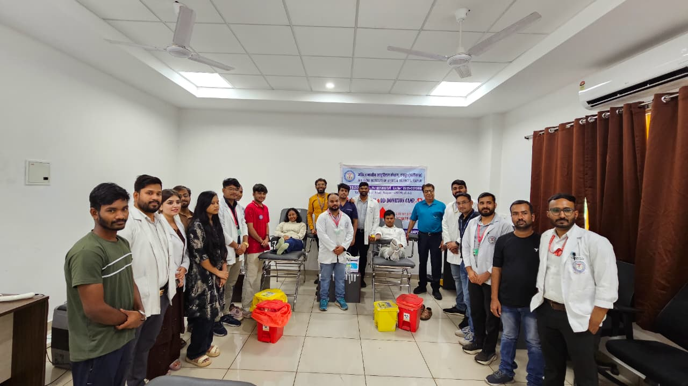
Official Camp Record • AIIMS Raipur & IIIT-NR
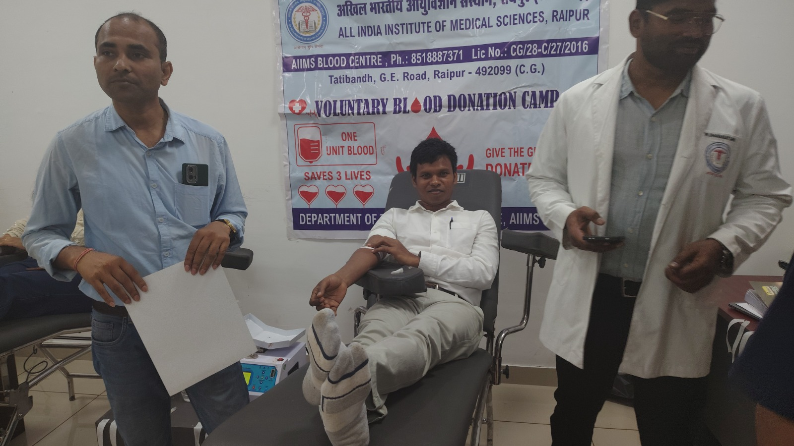
Volunteer in Action
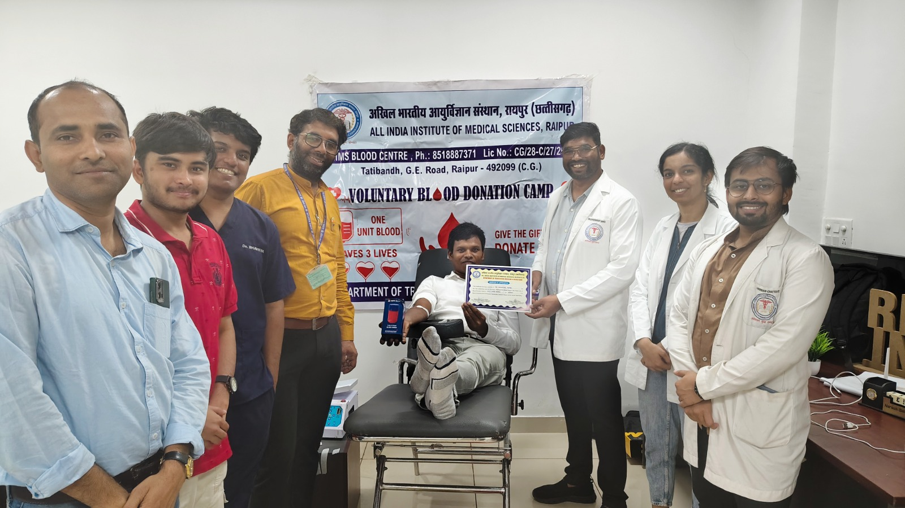
Care & Screening Area
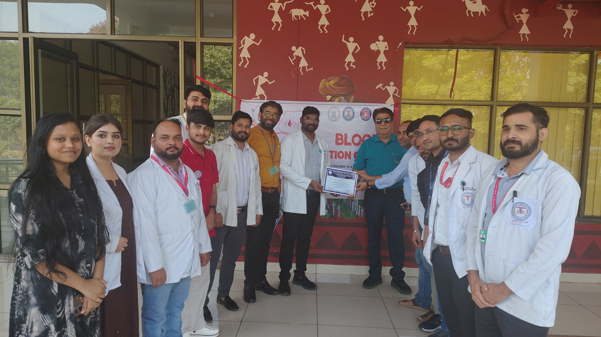
Medical Operations Desk
Activity 01Health & Wellness
International Yoga Day Celebration at IIIT-NR
Organized to promote regular yoga practice and physical-mental well-being under the expert guidance of renowned instructor Mr. Manjeet Sthapak (The Yoga Institute, Raipur). Over 60 students and faculty performed guided asanas, pranayama, and mindfulness routines.
Program Officers: Dr. K.N. Vishwakarma / Dr. L. MurmuInstructor: Mr. Manjeet Sthapak
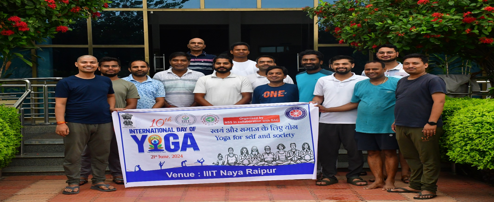
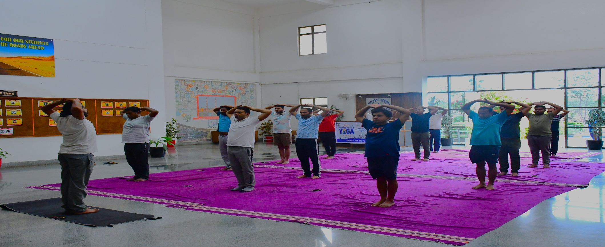
Activity 02Statewide Competition
ANVESHA 2.0 Nationwide Quiz Competition
Organized by the Ministry of Statistics & Programme Implementation (MoSPI) at Regional Office, Raipur. Competing against 180+ students from 34 state universities, the IIIT Naya Raipur contingent achieved the 9th Statewide Rank in official statistical acumen and data interpretation.
Organized by: MoSPI, Govt. of IndiaAchievement: 9th Position Statewide
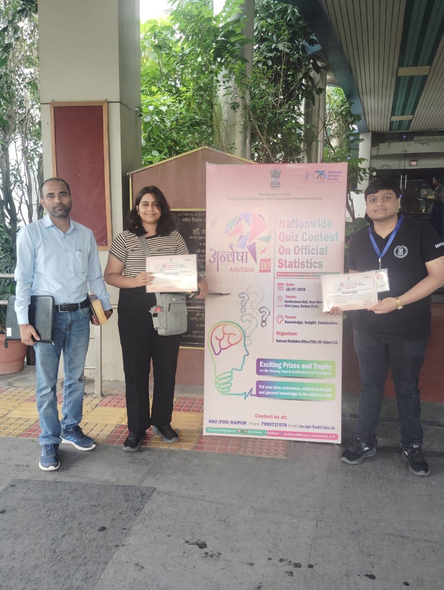
Activity 03National Observance
"Kargil Vijay Diwas" Commemoration
Graced by Chief Guest Prof. N.P. Dixit (Chairman, Jammu & Kashmir Ladakh Study Center) and Shri Deshdeepak Singh, alongside Director Prof. Om Prakash Vyas. A solemn tribute honoring the sacrifices of Indian soldiers, instilling national duty and resilience in students.
Chief Guest: Prof. N.P. DixitChairmanship: Prof. Om Prakash Vyas
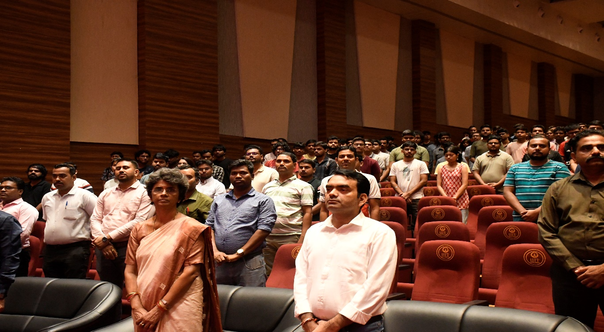
Activity 04National Observance
78th Independence Day Celebrations
A grand campus celebration attended by more than 500 students, faculty, and administrative staff. Featured ceremonial flag hoisting by Director Dr. Om Prakash Vyas, address to the university, and student cultural tributes honoring India's freedom movement.
Chief Guest: Dr. Om Prakash Vyas (Director)Attendance: 500+ Participants
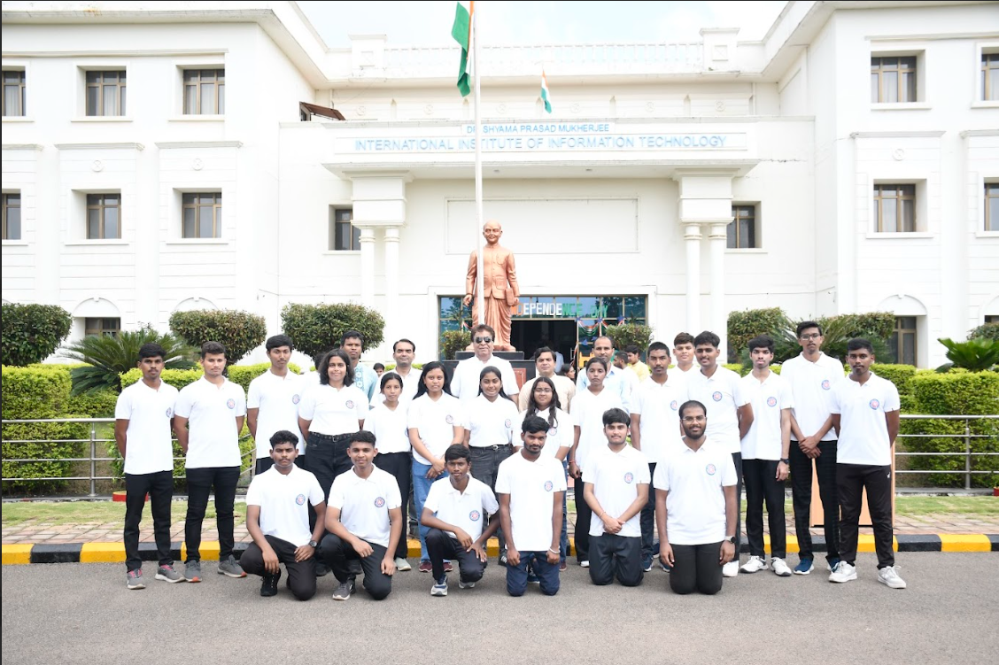
Activity 05Environmental Drive
Campus-Wide Greenery & Plantation Drive
Organized in collaboration with Treewards to enhance biodiversity and promote climate responsibility. Guided by Dr. K.N. Vishwakarma and Estate Officer Mr. Rakesh Kumar Mishra, over 250 volunteers planted saplings across the institutional perimeter.
Collaboration: Treewards & Estate OfficeVolunteers: 250+ Students & Staff
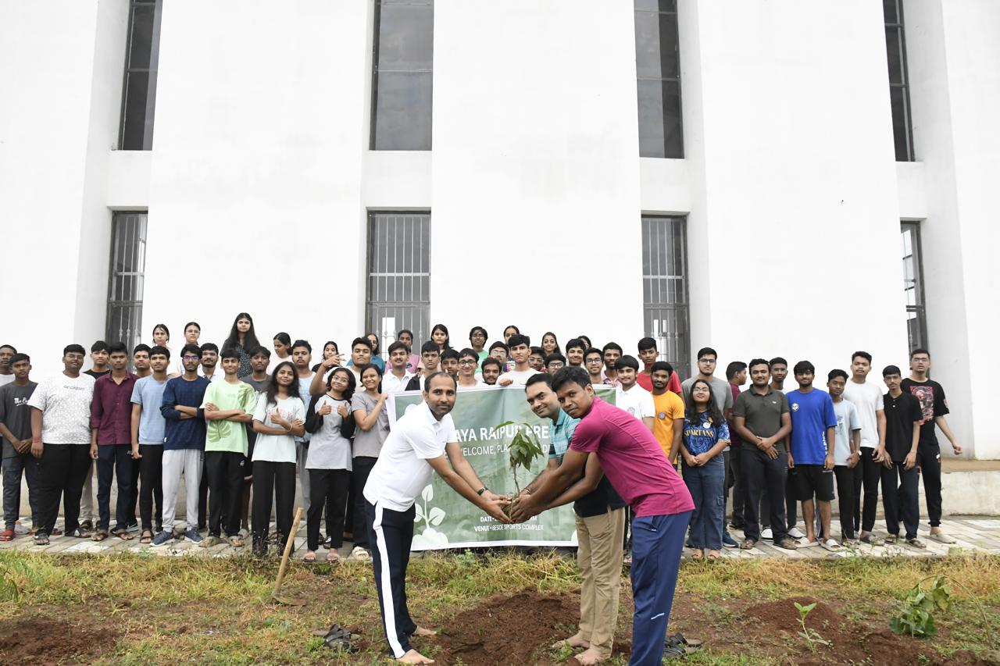
Activity 06Fit India / Sports
National Sports Day Multi-Sport Fest
Held under the Fit India and Khelo India mandates to celebrate fitness and team spirit. Organizers coordinated three days of intra-university tournaments in Cricket, Chess, and Basketball, fostering cross-departmental fellowship.
Disciplines: Cricket, Chess, BasketballInitiatives: Fit India & Khelo India
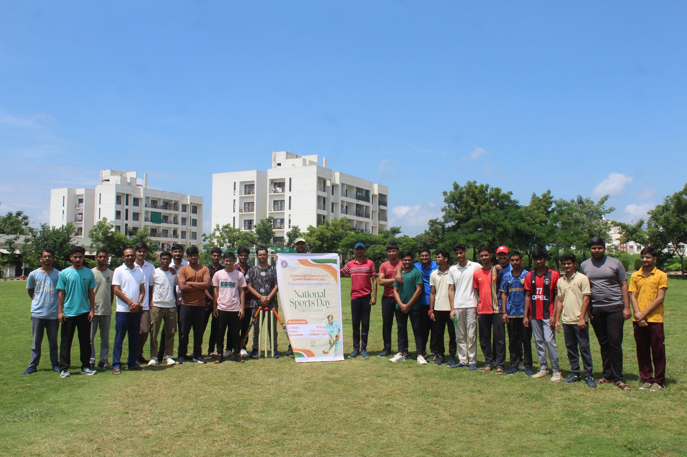
Activity 07State Accolade
New India Festival at IGKV Raipur
Six IIIT-NR students (Tanishq Bhattacharya, Divyansh Rangari, Yog Verma, Arpita Dash, Pranjal Gupta, and Omkareshwar) emerged as winners in state youth competitions and were formally accoladed by the Honorable Member of Parliament (Raipur) at NIT Raipur.
A 10-kilometer awareness marathon organized by the Chhattisgarh State Government and Red Ribbon Club in presence of Dr. Neeta Bajpayee (State NSS Officer). Seven IIIT-NR athletes completed the run to raise awareness and combat social stigma surrounding HIV/AIDS.
Distance: 10 Km City Circuit (7:00 AM)Cause: HIV/AIDS Destigmatization
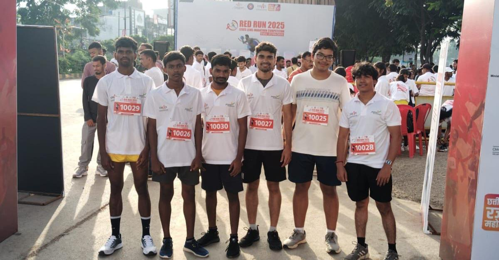
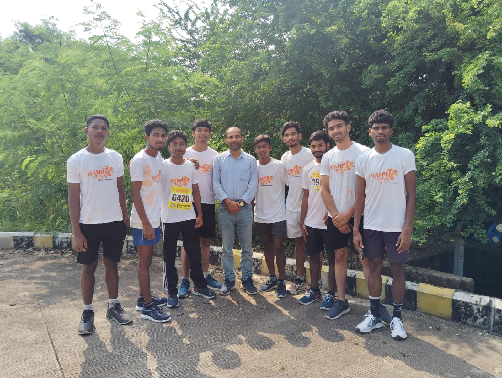
Activity 09Academic Policy
MoSPI 75th NSS Anniversary Essay Contest
Organized by the National Statistics Office (FOD), Raipur to celebrate 75 years of the National Sample Survey. Students authored essays exploring Artificial Intelligence in national statistical pipelines, digital survey transformation, and data-driven governance for Sustainable Development Goals.
Host: National Statistics Office (FOD)Theme: AI in India's Statistical Systems
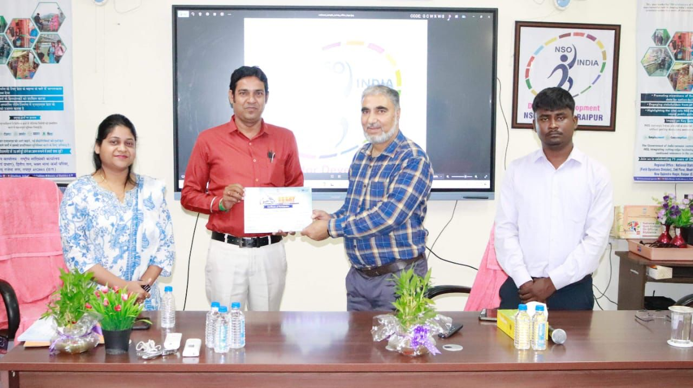
Activity 10Swachh Bharat
Gandhi Jayanti Cleanliness Drive
A dedicated campus sanitation drive led by Dr. K.N. Vishwakarma and Dr. Ramakrishna Bandi (CYTC Coordinator), with departmental support from Dr. Lakhindar Murmu and Dr. Maifuz Ali. Volunteers cleaned academic blocks, walkways, and perimeter grounds in the spirit of civic self-reliance.
Education USA & U.S. Consulate Higher Studies Seminar
An in-depth informational session conducted by U.S. Consulate and EducationUSA representatives for pre-final and final-year students. Covered Master's/Ph.D. admissions, funding fellowships, GRE/TOEFL requirements, and student visa compliance.
Collaborator: EducationUSA & U.S. ConsulateAudience: 60+ Aspiring Postgraduates
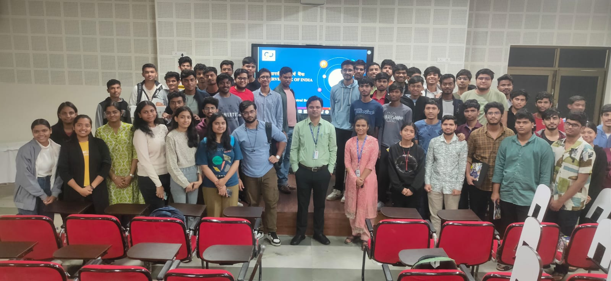
Activity 12Social Theater
HIV/AIDS Awareness Nukkad Natak (Street Play)
Performed near the Dr. SPM Statue in the Main Academic Building under the Red Ribbon Club mandate. Student dramatists utilized street theater to break social myths, educate on transmission routes, and advocate for empathy and responsible health practices.
Venue: Dr. SPM Statue, Academic BuildingInitiative: Red Ribbon Club, CG Dept.
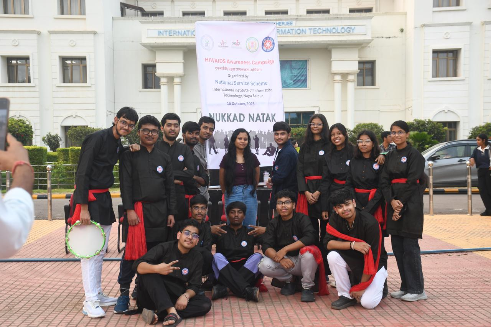
Activity 14Preventive Health
Free Dental Check-Up & Tobacco Awareness Camp
Organized in association with the National Tobacco Control Programme (NTCP), National Oral Health Programme (NOHP), and Rakhi Medical Centre. Qualified dentists administered dental screenings, hygiene counseling, and anti-tobacco education to campus residents.
Partners: NTCP, NOHP & Rakhi Medical CentreVenue: Medical Centre Ground Floor
Medical Consultation Drive • Free Oral Screening for Campus
Activity 15National Observance
77th Republic Day Celebrations at IIIT-NR
Commemorating the adoption of the Constitution of India with director Dr. Om Prakash Vyas as Chief Guest. The ceremony assembled faculty, staff, and families at the Academic Building entrance for national flag hoisting, constitutional oaths, and student cultural tributes.
Chief Guest: Dr. Om Prakash Vyas (Director)Theme: Constitutional Values & Unity